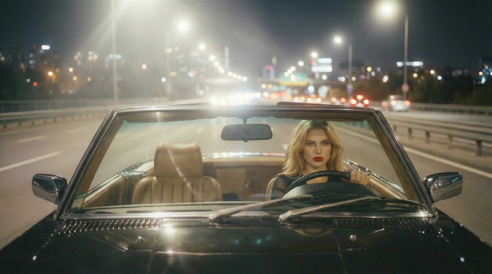

A constructed place / Los Angeles 1997
The same woman moves through the same city, night after night.
Built around an imagined Los Angeles in 1997, The Finest moves from a convertible on the freeway to a series of carefully constructed interiors. Hotel corridors, mirrors, lamps, fabrics and a city seen through the windows create one continuous visual world.
For this music film, Alejandro Molinari developed the protagonist, scenes and architectural settings, directing character consistency and visual continuity across the sequence.
- Artists
- Maison Satin & Alejandro Molinari
- Label
- Neon Riviera
- Direction
- Alejandro Molinari
- Format
- Music film / AI-assisted production


Recurring character, connected scenes and repeated details. Use the arrows, swipe or keyboard to explore the series.


Locations and interiors designed for the film: the apartment, corridor, suite, bath and imagined hotel.
Neon Riviera / An audiovisual project
Explore Parallel Vision Agency Alejandro Molinari